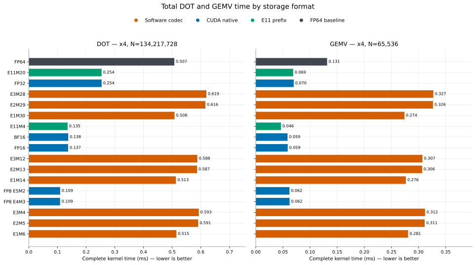
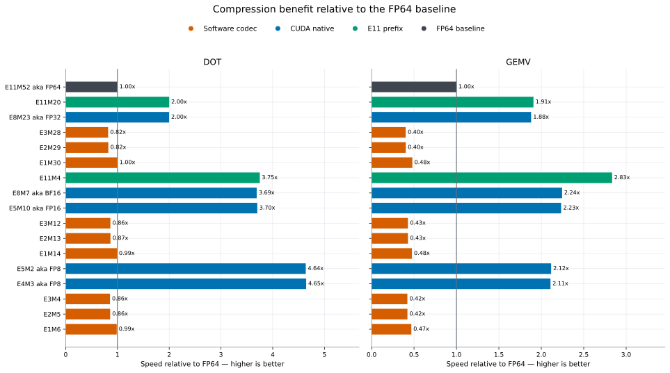
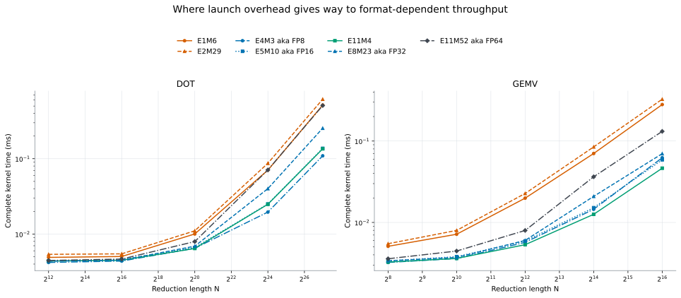

Total performance
Complete event-timed DOT and GEMV performance, including every kernel launch.
All formats and access widths
Every format and x1/x2/x4 implementation is plotted against N. Use access-width, storage-width, and format controls to isolate any subset.
Absolute kernel time
This is the end-to-end comparison at the largest tested N using x4 access and N(0,1) data.

Speed relative to FP64
This makes the storage-bandwidth benefit easier to compare across DOT and GEMV; values above 1 are faster than FP64.

Size regimes
This shows when launch overhead stops hiding differences in load and conversion cost.
